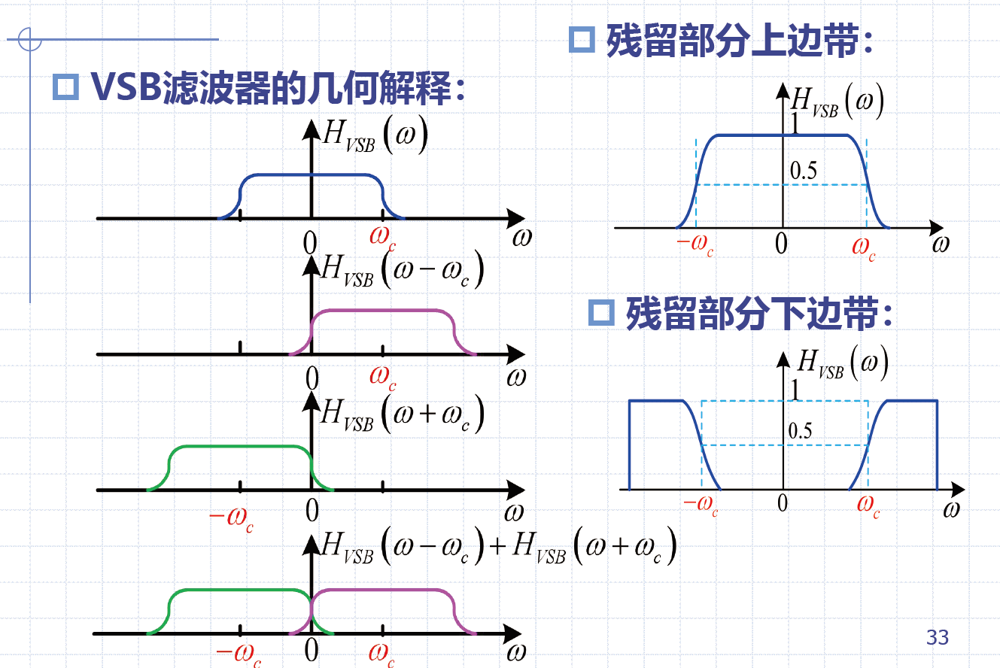

5 模拟调制系统
5.0 引言
载波调制：用调制信号控制高频载波的几个或某几个参量，使之随调制信号而变化
调制信号：来自信源的基带信号（模拟/数字）
载波：未受调制的周期性振荡信号（正弦/非正弦）
已调信号：载波受调制后形成已调信号，含有调制信号的全部特征
解调：调制的逆过程，将已调信号中的调制信号恢复出来
调制的目的：
- 使信号适于在信道中传输
- 实现信道的多路复用
- 改善系统的抗噪声性能
- 实现传输带宽与信噪比之间的互换
调制的分类：
- 按载波形式：连续波调制、脉冲调制
- 按调制信号：模拟调制、数字调制
- 按已调信号频谱：线性调制、非线性调制
5.1 线性调制原理
幅度调制器的一般模型：幅度调制是由调制信号去控制高频载波的幅度，使之随调制信号作线性变化的过程
- 在波形上，幅度已调信号的幅度随基带信号的规律而呈正比地变化
- 在频谱结构上，它的频谱完全是基带信号频谱在频域内的简单搬移
- 由于搬移是线性的，因此幅度调制通常称为
线性调制 - 线性并不意味着已调信号与调制信号之间符合线性变换关系
- 事实上，任何调制过程都是一种
非线性变换过程
5.1.1 调幅AM
标准调幅就是常规双边带调幅，简称调幅
- AM时域表达式：\(s_{AM}(t)=[A_0+m(t)]cos\omega_ct=A_0cos\omega_ct+m(t)cos\omega_ct\)
- \(m(t)\)可以是确知信号或随机信号
- 调制信号为确知信号：
AM频域表达式：\(S_{AM}(\omega)=\pi A_0[\delta(\omega+\omega_c)+\delta(\omega-\omega_c)]+\frac{1}{2}[M(\omega+\omega_c)+M(\omega-\omega_c)]\)
- 调制信号为随机信号：
- 已调信号的频域表示必须用
功率谱描述
- 已调信号的频域表示必须用
- 当满足条件\(|m(t)|_{max}\leq A_0\)时，使用包络检波能够恢复出原始调制信号
- 不满足上述条件时，出现“过调幅”现象，包络检波会发生失真，但是可以使用相干解调等其他方式
- AM的频谱：
- AM信号是带有载频分量的双边带信号
- 载频分量、上边带、下边带三部分组成
- 带宽是基带信号带宽的2倍，即\(B_{AM}=2f_H\)
- AM信号的功率：\(P_{AM}=\frac{A_0^2}{2}+\frac{\overline{m^2(t)} }{2}=P_c+P_s\)
- \(P_c\)为载波功率，\(P_s\)为边带功率
- 调制效率：\(\eta_{AM}=\frac{\overline{m^2(t)}}{A_0^2+\overline{m^2(t)}}\)
AM信号总结：
- \(a\leq 1\)时，包络与\(m(t)\)呈正比
- 已调信号时域：\(s_{AM}(t)=[A_0+m(t)]cos\omega_ct=A_0cos\omega_ct+m(t)cos\omega_ct\)
- 已调信号频谱：\(S_{AM}(\omega)=\pi A_0[\delta(\omega+\omega_c)+\delta(\omega-\omega_c)]+\frac{1}{2}[M(\omega+\omega_c)+M(\omega-\omega_c)]\)
- 已调信号带宽：\(B_{AM}=2f_H\)
- 已调信号功率：\(P_{AM}=\frac{A_0^2}{2}+\frac{\overline{m^2(t)} }{2}=P_c+P_s\)
- 调制效率：\(\eta_{AM}=\frac{\overline{m^2(t)}}{A_0^2+\overline{m^2(t)}}\)
- 特点：功率利用率低，系统结构简单、价格低廉
5.1.2 双边带调制DSB
DSB信号总结：
- 包络与\(m(t)\)不成正比，解调需要相干解调
- \(m(t)\)过零点处，高频载波相位有180突变
- 已调信号时域：\(s_{DSB}(t)=m(t)cos\omega_ct\)
- 已调信号频谱：\(S_{DSB}(\omega)=\frac{1}{2}[M(\omega+\omega_c)+M(\omega-\omega_c)]\)
- 已调信号带宽：\(B_{DSB}=2f_H\)
- 特点：利用率高，调制效率为100%

5.1.3 单边带调制SSB
DSB信号中两个边带中任意一个都包含了\(M(\omega)\)的所有频谱成分，因此只传输一个边带即可。
- 根据滤除方法的不同，产生SSB信号的方法有：滤波法、相移法
- 滤波法：先产生一个双边带信号，然后使其通过边带滤波器，滤除不需要的边带
- SSB频域表示：\(S_{SSB}(\omega)=S_{DSB}(\omega)\cdot H(\omega)\)
- 保留上边带（USB）：\(H(\omega)=H_{USB}(\omega)=\begin{cases}1 & |\omega|>\omega_c \\ 0 & |\omega|\leq\omega_c\end{cases}\)
- 保留下边带（LSB）：\(H(\omega)=H_{LSB}(\omega)=\begin{cases}1 & |\omega|<\omega_c \\ 0 & |\omega|\geq\omega_c\end{cases}\)
- 技术难点：边带滤波器的制作，不具有理想特性，需要有过渡带
- 解决思路：多级DSB调制及边带滤波（调制信号中有直流以及低频分量时不适用）
- 相移法：利用相移网络，对载波和调制信号进行适当相移，在合成过程中将其中一个边带抵消
- SSB时域表示：\(s_{SSB}=\frac{1}{2}m(t)cos\omega_ct\mp \frac{1}{2}\hat{m(t)}sin\omega_ct\)
- 技术难点：宽带相移网络的制作，对调制信号所有频率分量均精确相移\(\frac{\pi}{2}\)
- 解决思路：维弗法
SSB信号总结：
- 已调信号时域：\(s_{SSB}=\frac{1}{2}m(t)cos\omega_ct\mp \frac{1}{2}\hat{m(t)}sin\omega_ct\)
- 已调信号带宽：\(B_{SSB}=f_H\)
- 特点：节省发射功率、功率利用率高，SSB实现比AM和DSB复杂
5.1.4 残留边带调制VSB
残留边带调制VSB介于DSB与SSB之间，即克服了DSB占用频带宽的缺点，也克服了SSB信号实现中的困难。VSB对边带的处理中，并不是完全抑制，而是逐渐切割，使之残留一小部分。
- 已调信号频域：\(S_{VSB}(\omega)=S_{DSB}(\omega)\cdot H_{VSB}(\omega)\)
- 残留边带滤波器的特性\(H(\omega)\)在\(\pm \omega_c\)处必须具有互补对称（奇对称）特性，相干解调时才能无失真地恢复调制信号
相干解调：
\[
\begin{aligned}
s_p(t)&=s_{VSB}(t)cos\omega_ct \\
S_p(\omega)&=\frac{1}{2}[S_{VSB}(\omega+\omega_c)+S_{VSB}(\omega-\omega_c)] \\
&=\frac{1}{4}[M(\omega+2\omega_c)+M(\omega)]H_{VSB}(\omega+\omega_c)+\frac{1}{4}[M(\omega-2\omega_c)+M(\omega)]H_{VSB}(\omega-\omega_c) \\
& \stackrel{LPF}{\longrightarrow} \frac{1}{4}M(\omega)[H_{VSB}(\omega+\omega_c)+H_{VSB}(\omega-\omega_c)]
\end{aligned}
\]
- 残留边带滤波器必须满足：\(H_{VSB}(\omega+\omega_c)+H_{VSB}(\omega-\omega_c)=const, \ |\omega|\leq \omega_H\)
- \(\omega_H\)为截止角频率

VSB信号总结：
- 已调信号频域：\(S_{VSB}(\omega)=S_{DSB}(\omega)\cdot H_{VSB}(\omega)\)
- 残留边带滤波器：\(H_{VSB}(\omega+\omega_c)+H_{VSB}(\omega-\omega_c)=const, \ |\omega|\leq \omega_H\)
- 即克服了DSB占用频带宽的缺点，也克服了SSB信号实现中的困难
- 带宽与滤波器实现难易程度之间存在矛盾
5.1.5 相干解调
相干解调；
- 解调与调制的实质是频谱搬移
- 关键：相干解调时，为了无失真恢复原始基带信号，接收端需要提供与接受的已调载波严格同步（同频同相）的本地载波（相干载波）
- 本地载波与已调信号相乘后，经过LPF取出低频分量，得到原始的基带信号
- 适用于：AM、DSB、SSB、VSB（AM需要在解调后增加隔直流电容）
包络检波：
- 直接从已调信号的幅度中提取原调制信号，结构简单
- 包络检波输出是相干解调输出的2倍
- AM信号在满足的条件下，其包络与调制信号形状完全一样，因此AM信号几乎无例外地使用包络检波
5.2 线性调制系统的抗噪声性能
解调器抗噪声性能分析模型：
带通滤波器的传输特性：滤波后为平稳窄带高斯噪声
\[
\begin{aligned}
&n_i(t)=n_c(t)cos\omega_0t-n_s(t)sin\omega_0t \\
&\overline{n_c(t)}=\overline{n_s(t)}=\overline{n_i(t)}=0 \\
&\overline{n_c^2(t)}=\overline{n_c^2(t)}=\overline{n_c^2(t)}=N_i=n_0B
\end{aligned}
\]
解调器输出信噪比：模拟通信系统的主要质量指标
\[
\frac{S_O}{N_O}=\frac{\overline{m_o^2(t)}}{\overline{n_o^2(t)}}=\frac{解调器输出有用信号的平均功率}{解调器输出噪声的平均功率}
\]
解调器输入信噪比：
\[
\frac{S_i}{N_i}=\frac{\overline{s_m^2(t)}}{\overline{n_i^2(t)}}=\frac{解调器输入已调信号的平均功率}{解调器输入噪声的平均功率}
\]
调制制度增益（信噪比增益）：
- 便于比较同来调制系统采用不同解调器的性能
- 同一调制方式，信噪比增益G越大，抗噪声性能越好
\[
G=\frac{S_o/N_o}{S_i/N_i}
\]
5.2.1 DSB相干解调
带通滤波器：
- BPF：\(f_0=f_c\)，\(B=2f_H\)
- 带通滤波器中心频率\(f_0\)与调制载频\(f_c\)相同
性能分析：
- 输入信号功率：\(S_i=\overline{s_m^2(t)}=\frac{1}{2}\overline{m^2(t)}\)
- 有用信号功率：\(S_o=\overline{m_o^2(t)}=\frac{1}{4}\overline{m^2(t)}\)
- 输出噪声功率：\(N_o=\overline{n_o^2(t)}=\frac{1}{4}N_i\)
- 输入信噪比：\(\frac{S_i}{N_i}=\frac{\frac{1}{2}\overline{m^2(t)}}{n_0B}\)
- 输出信噪比：\(\frac{S_o}{N_o}=\frac{\overline{m^2(t)}}{n_0B}\)
- 调制制度增益：\(G_{DSB}=2\)
5.2.2 SSB相干解调
带通滤波器：
- BPF：\(f_0=f_c\pm \frac{1}{2}f_H\)，\(B=f_H\)
- 带通滤波器中心频率\(f_0\)与调制载频\(f_c\)不同
性能分析：
- 输入信号功率：\(S_i=\overline{s_m^2(t)}=\frac{1}{4}\overline{m^2(t)}\)
- 有用信号功率：\(S_o=\overline{m_o^2(t)}=\frac{1}{16}\overline{m^2(t)}\)
- 输出噪声功率：\(N_o=\overline{n_o^2(t)}=\frac{1}{4}N_i\)
- 输入信噪比：\(\frac{S_i}{N_i}=\frac{\overline{m^2(t)}}{4n_0B}\)
- 输出信噪比：\(\frac{S_o}{N_o}=\frac{\overline{m^2(t)}}{4n_0B}\)
- 调制制度增益：\(G_{SSB}=1\)
DSB调制与SSB调制分析：
- 两者输入信号功率不同、带宽不同，在相同噪声功率谱密度\(n_0\)条件下，二者的输入噪声功率也不同
- 当\(S_i\)、\(n_0\)、\(f_H\)相同的情况下，二者的输出信噪比相同，即二者抗噪声性能相同
5.2.3 AM包络检波
带通滤波器：
- BPF：\(f_0=f_c\)，\(B=2f_H\)
- 带通滤波器中心频率\(f_0\)与调制载频\(f_c\)相同
性能分析：
- 输入信号功率：\(S_i=\frac{A_0^2}{2}+\frac{\overline{m^2(t)}}{2}\)
- 输出噪声功率：\(N_i=n_0B\)
- 输出合成包络\(E(t)\)（检波器传输系数为1）：
- \(s_m(t)+n_i(t)=E(t)cos[\omega_ct+\phi(t)]\)
- \(E(t)=\sqrt{[A_0+m(t)+n_c(t)]^2+n_s^2(t)}\)
- 输入信噪比：\(\frac{S_i}{N_i}=\frac{A_02+\overline{m^2(t)}}{2n_0B}\)
- 大信噪比：（\([A_0+m(t)]>>\sqrt{n_c^2(t)+n_s^2(t)}\)）
- 输出信噪比：\(\frac{S_o}{N_o}=\frac{\overline{m^2(t)}}{n_0B}\)
- 调制制度增益：\(G_{AM}=\frac{2\overline{m^2(t)}}{A_0^2+\overline{m^2(t)}}\)
- \(G_{AM}\)随\(A_0\)的减小而增加；为了不发生过调制，\(G_{AM}\)总小于1（最大值为2/3）
- 包络检波对输入信噪比没有改善
- AM包络检波性能几乎与相干解调一样
- 小信噪比：（\([A_0+m(t)]<<\sqrt{n_c^2(t)+n_s^2(t)}\)）
- 合成包络中没有单独的信号项，有用信号被噪声扰乱
- 输出信噪比不是按比例随输入信噪比下降，而是急剧恶化 -> 门限效应
- 开始出现门限效应的输入信噪比为门限值
- 门限效应由包络检波器的非线性作用解调引起
门限效应：
- 相干解调的方法解调各种线性调制信号时不存在门限效应
- 信号与噪声可以分别解调，解调器输出端总有单独存在的有用信号项
5.3 角度调制原理
角度调制：调制信号不仅可以载荷于载波幅度，还可以载荷于载波频率或载波相位变化，分别为频率调制（FM）和相位调制（PM）
- 角度调制信号\(s_m(t)=Acos[w_ct+\phi(t)]\)；基带调制信号\(m(t)\)
- 恒定振幅A，瞬时相位\(\theta(t)=w_ct+\phi(t)\)，瞬时相位偏移\(\phi(t)\)，瞬时角频率\(\omega(t)=\frac{d[w_ct+\phi(t)]}{dt}\)，瞬时频偏\(\frac{d\phi(t)}{dt}\)
- 相位调制信号PM：
- \(\phi(t)=K_pm(t)\)，\(K_p\)为调相灵敏度
- \(s_{PM}(t)=Acos[\omega_ct+K_pm(t)]\)
- 频率调制信号FM：
- \(\frac{d\phi(t)}{dt}=K_jm(t)\)，\(K_j\)为调频灵敏度
- \(s_{FM}(t)=Acos[\omega_ct+K_f\int m(t)dt]\)
FM与PM：
- 频率与相位之间存在微分和积分的关系
- 间接调相：调制信号先微分，后调频，获得调相波
- 间接调频：调制信号先积分，后调相，获得调频波
- PM是相位偏移随\(m(t)\)线性变化
- FM是相位偏移随\(m(t)\)的积分线性变化
单音调制FM与PM：
- \(s_{PM}=Acos[\omega_ct+K_pA_mcos\omega_mt]=Acos[\omega_ct+m_pcos\omega_mt]\)
- 调相指数：\(m_p=K_pA_m\)，表示最大相位偏移
- \(s_{AM}=Acos[\omega_ct+K_fA_m\int cos\omega_m\tau d\tau]=Acos[\omega_ct+m_fsin\omega_mt]\)
- 调频指数：\(m_f=\frac{K_fA_m}{\omega_m}=\frac{\Delta \omega}{\omega_m}=\frac{\Delta f}{f_m}\)，表示最大相位偏移，\(\Delta \omega=K_fA_m\)为最大角频偏，\(\Delta f=m_f\cdot f_m\)为最大频偏
5.3.1 频率调制
窄带调频NBFM与宽带调频WBFM：
- FM最大瞬时相位偏移：\(|K_f\int m(t)dt|_{max}<<\frac{\pi}{6}\) -> 窄带调频，反之为宽带调频
- 窄带调频占据带宽更窄，抗干扰性能比AM好
- 窄带调频有较为简单的时域表达式，宽带调频代表了更一般的情形
- 窄带调频的带宽与AM相同，均为调制信号最高频率的2倍
- 宽带调频的相关证明见教材P109
关于宽带调频单音调制的讨论：
- 对于单音调制信号\(m(t)=A_mcos\omega_mt\)：
- 时域展开表达式：\(s_{FM}(t)=A\sum_{n=-\infty}^{+\infty}J_n(m_f)cos(\omega_c+n\omega_m)t\)
- 频域展开表达式：\(s_{FM}(t)=\pi A\sum_{n=-\infty}^{+\infty}J_n(m_f)[\delta(\omega-\omega_c-n\omega_m)+\delta(\omega+\omega_c+n\omega_m)]\)
卡森公式：
- 调频波的有效带宽为\(B_{FM}=2(m_f+1)f_m=2(\Delta f+f_m)\)
- 当\(m_f<<1\)时，窄带调频的带宽为\(B_{FM}=2f_m\)
- 当\(m_f>>1\)时，宽带调频的带宽为\(B_{FM}=2\Delta f\)
- \(f_m\)为调制频率，\(\Delta f\)为最大频偏
- 以上两个结论为单音调频的条件下的结果
- 对于多音或任意带限信号，卡森公式仍然适用（\(f_m\)为调制信号的最高频率）
调制信号的功率：
- \(P_{FM}=\frac{A^2}{2}=P_c\)
- 调频信号的平均功率等于未调载波的平均功率，即调制后的总功率不变，只是功率的重分配
5.3.2 调频信号的产生与解调
调频信号的产生；
- 直接调频法：用调制信号直接控制载波振荡器频率
- 优点：实现线性调频的要求下可获得加大频偏
- 缺点：频率稳定度不高
- 间接调制法（阿姆斯特朗法）：先将调制信号积分，然后对载波进行调相得到NBFM信号，再经过n次倍频器得到WBFM信号
- 优点：频率稳定性好
- 缺点：需要多次倍频和混频，结构复杂
调频信号的解调：
- 非相干解调：
- 鉴频器：产生与输入调频信号的频率呈线性关系的输出电压
- 相干解调：
- 仅适用于NBFM信号，因为NBFM可分解为同相分量与正交分量
5.4 调频系统的抗噪声性能
非相干解调抗噪声性能分析模型：
- 带通滤波器：已知信号带宽外的噪声
- 噪声：加性高斯白噪声
- 限幅器：消除由于噪声和其他原因引起的接收信号的幅度起伏
输入信噪比：
- 调频信号：\(S_{FM}(t)=Acos[\omega_ct+K_f\int m(\tau)d\tau]\)
- 输入信号功率：\(S_i=\frac{A^2}{2}\)
- 输入噪声功率：\(N_i=n_0B_{FM}\)
- 解调器输入信噪比：\(\frac{S_i}{N_i}=\frac{A^2}{2n_0B_{FM}}\)
大信噪比解调增益：
- 输出信噪比：\(\frac{S_o}{N_o}=\frac{3A^2K_f^2\overline{m^2(t)}}{8\pi^2n_0f_m^3}\)
- 单频余弦波：\(G_{FM}=\frac{3}{2}m_f^2\frac{A^2/2}{n_0f_m}\)
- 宽带调频：\(G_{FM}=3m_f^2(m_f+1)\)
大信噪比下FM与AM包络检波对比：
- 若接收端输入信号幅度与噪声功率谱密度相同，宽带FM输出信噪比是AM系统的\(3m_f^2\)倍
- FM系统在制度增益的优越性是以增加传输带宽获得的，但改善非无止境->传输带宽增加导致输入噪声增大，输入信噪比下降
小信噪比的门限效应：
- 当FM系统的解调器输入低于一定值，输出信噪比急剧恶化，称为FM信号解调的门限效应-> 门限值
- 随着调制指数的上升，门限值增大但浮动不大，门限值一般认为在10 dB左右
- 降低门限值->锁相环解调器和辅反馈解调器，或预加重和去加重改善
预加重与去加重：
- 预加重：发送端条之前通过预加重滤波器\(H_p(f)\)，提高信号的高频分量
- 去加重：接收端FM解调后通过去加重滤波器\(H_d(f)\)，频域传输特性与预加重滤波器相反，从而将高频噪声衰减的同时不造成传输信号的频率失真
- \(H_p(f)=\frac{1}{H_d(f)}\)
5.5 模拟调制系统的性能比较
假设所有系统以下参数相同：
- 解调器输入信号功率\(S_i\)
- 噪声单边功率谱密度\(n_0\)
- 基带信号带宽\(f_m\)
- AM为100%调制，且调制信号为单频正弦波
5.6 频分复用
复用技术的定义：
- 将多个彼此独立的信号合并为一个符合信号，在同一个信道中传输
复用技术的分类：
- 频分复用FDM
- 时分复用TDM
- 码分复用CDM
模拟电话多路复用：
- 12路->一个基群
- 5个基群->一个超群
- 10个超群->一个主群
- 每路电话信号标准带宽：4 kHz
- 例题见教材P125